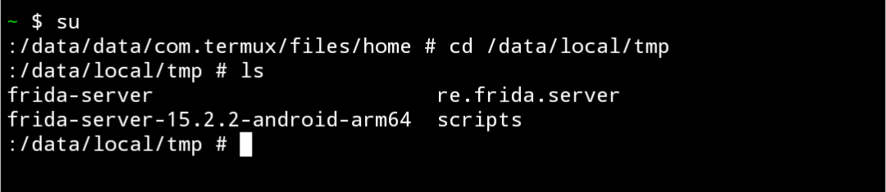

Use Frida in Rooted Android Without PC/laptop
In this tuorial we will see how to use Frida gadget on rooted android device without pc/laptop
What is Frida?
it’s a dynamic code instrumentation toolkit. It lets you inject snippets of JavaScript or your own library into native apps on Windows, macOS, GNU/Linux, iOS, Android, and QNX. Frida also provides you with some simple tools built on top of the Frida API. These can be used as-is, tweaked to your needs, or serve as examples of how to use the API. Read more about frida
Usage
Typically pc/laptop is used to interact with android apps via adb. Now we can use only rooted device and do interact with applications in that mobile.
Setup
Prerequisites:
1. Rooted Device
2. Termux with python pre-installed
3. Common sense
Instructions
First of all install Frida with pip, for other ways click here
pip install frida-tools
Now download latest Frida-server android binary from the frida github Link.
wget https://github.com/frida/frida/releases/download/15.2.2/frida-server-15.2.2-android-arm64.xz
extract the file
xz -d frida-server-15.2.2-android-arm64.xz
now move that binary file to /data/local/tmp/ folder by using termux or any root file explorer.
sudo mv frida-server-15.2.2-android-arm64 /data/local/tmp/frida-server
here i used sudo to move the file to
/data/local/tmp. so make sure you already have sudo in termux, otherwise install sudo with this commandpkg install tsu
now change to root user in termux
su
change to the Frida-server binary location i.e, /data/local/tmp/frida-server
cd /data/local/tmp/
give permission to that binary
chmod 777 frida-server

now run frida-server listening on localhost as root user./frida-server -l 127.0.0.1:1234
now open another tab and use frida cli tools we installed previously For more information on Frida usage visit here